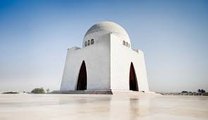
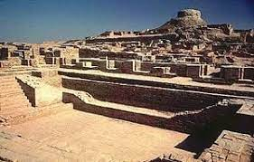
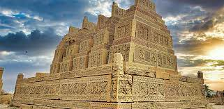

Sindh is sometimes referred to as the Bab-ul Islam (transl. 'Gateway of Islam'), as it was one of the first regions of the Indian subcontinent to fall under Islamic rule
Karachi is the most populous city in Pakistan and 12th most populous city in the world, with a population of over 20 million. It is situated at the southern tip of the country along the Arabian Sea coast. It is the former capital of Pakistan and capital of the province of Sindh.

Built around 2500 BCE, it was the largest settlement of the ancient Indus Valley Civilisation, and one of the world's earliest major cities, contemporaneous with the civilizations of ancient Egypt, Mesopotamia, Minoan Crete, and Norte Chico.

The capital of three successive dynasties and later ruled by the Mughal emperors of Delhi, Thatta was constantly embellished from the 14th to the 18th century. The remains of the city and its necropolis provide a unique view of civilization in Sind.
